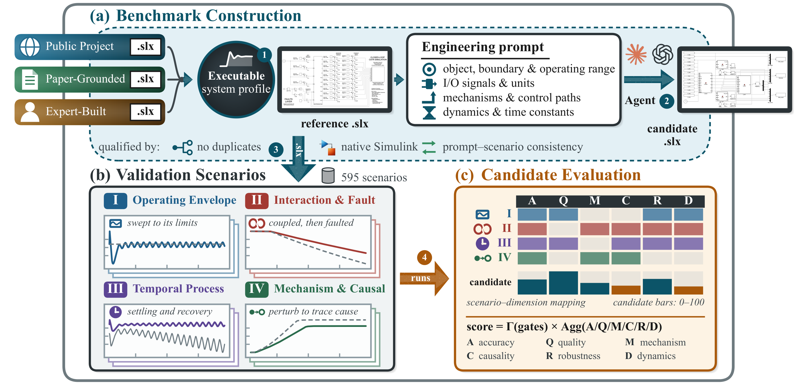
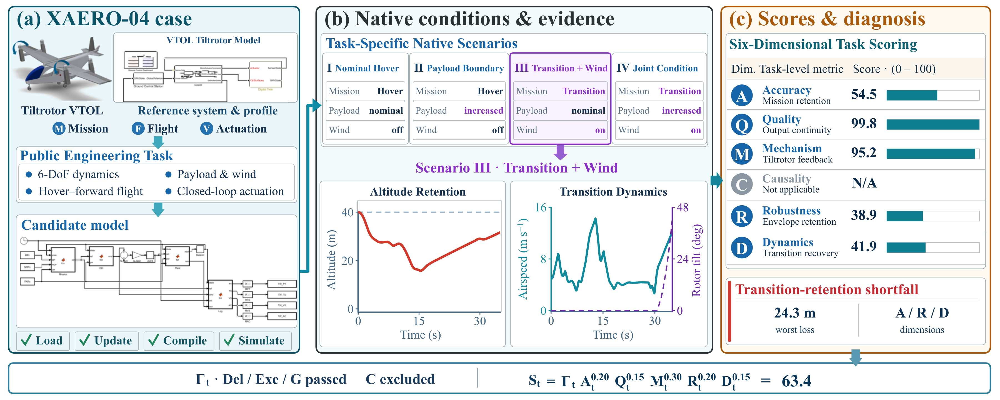
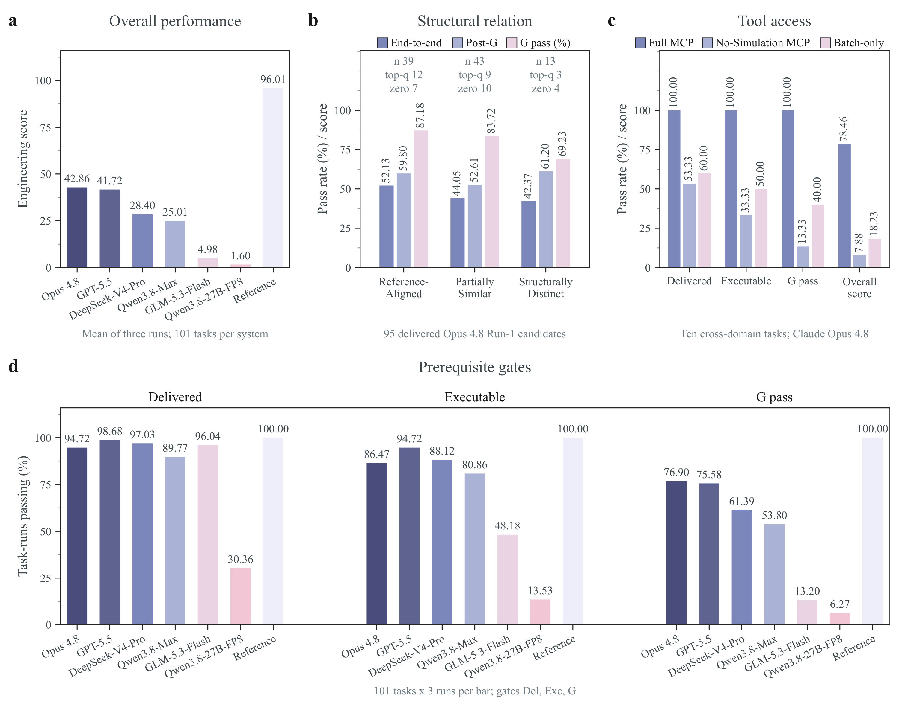

Existing Simulink benchmarks mainly evaluate whether generated models compile, execute, or resemble a reference model. These criteria do not establish whether a model satisfies its engineering requirements. We introduce SimuVerity, a benchmark of 101 text-to-executable Simulink model-generation tasks across ten engineering domains. For each task, executable-system profiles ground the engineering specification and four families of native simulation scenarios. A hierarchical evaluator first checks artifact delivery, native executability, and engineering qualification, then scores qualified models across six dimensions covering accuracy, output quality, mechanistic fidelity, control and causal integrity, operating-domain robustness, and dynamic response. We evaluate six agent systems with SimuVerity. The best system achieves an overall score of only 42.86. The results show that structural similarity is a poor proxy for engineering performance: capability bottlenecks arise both in producing qualified implementations and in satisfying multidimensional requirements after qualification. Meanwhile, some high-scoring models still exhibit severe visual-layout disorder. SimuVerity provides a systematic basis for assessing agents' engineering capabilities and diagnosing failures in executable Simulink model generation.

The SimuVerity pipeline. Benchmark construction, native simulation testing, and six-dimensional performance evaluation.

Evaluation of the closed-loop tiltrotor VTOL model. Native simulation evidence, six-dimensional scores, and failure diagnosis for the candidate model. Four of six scenarios are shown.
If you would like your agent system to be listed on the leaderboard, please email us at ruiqizhang_swjtu@126.com or wjhwdscience@stu.xjtu.edu.cn, or open a GitHub issue.
| Rank | Agent system | Overall | Delivered | Executable | G pass |
|---|---|---|---|---|---|
| 1 | Opus 4.8 + Claude Code | 42.86 | 94.72% | 86.47% | 76.90% |
| 2 | GPT-5.5 + Codex | 41.72 | 98.68% | 94.72% | 75.58% |
| 3 | DeepSeek-V4-Pro + Claude Code | 28.40 | 97.03% | 88.12% | 61.39% |
| 4 | Qwen3.8-Max + Claude Code | 25.01 | 89.77% | 80.86% | 53.80% |
| 5 | GLM-5.3-Flash + Claude Code | 4.98 | 96.04% | 48.18% | 13.20% |
| 6 | Qwen3.8-27B-FP8 + Claude Code | 1.60 | 30.36% | 13.53% | 6.27% |
| - | Reference | 96.01 | 100.00% | 100.00% | 100.00% |
Overall scores and prerequisite pass rates. Agent results are three-run means; Reference reports the mean score of 101 task-specific reference systems.

Summary of the experimental results. (a) Overall performance, (b) structural relation, (c) tool access, and (d) prerequisite-gate outcomes.
@article{zhang2026simuverity,
title = {SimuVerity: Benchmarking Agents for Engineering-Grade Simulink Model Generation},
author = {Zhang, Ruiqi and Wang, Jiahao and Li, Mingxuan and Luo, Haichen and Wang, Chaoting and Mou, Guoyu and Lai, Keyu and Lv, Hanchao and Wang, Jiaxu and Zheng, Yibo and Yang, Aijun and Wang, Xiaohua},
journal = {arXiv preprint arXiv:XXXX.XXXXX},
year = {2026}
}